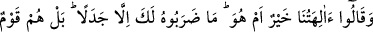
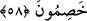
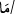

58. Bizim tanrılarımız mı hayırlı, yoksa o mu? dediler. Bunu sana ancak tartışmak
için söylediler. Doğrusu onlar kavgacı bir toplumdur.
Senin kavmin, sana göre “bizim tanrılarımız mı hayırlı, yoksa o”; yani Îsâ mı hayırlı
“dediler.” -Zîrâ onların tanrıları, kendilerine göre Îsâ’dan daha hayırlıdır.- Belli ki
(sana göre) Îsâ bizim tanrılarımızdan daha hayırlıdır. Şimdi, Îsâ bizim tanrılarımızdan
hayırlı olduğu halde cehennemde olacaksa bizim de tanrılarımızla birlikte cehennemde
olmamızda bir sakınca yoktur.
Rivâyet edildiğine göre Allah Teâlâ bu duruma cevap olarak “Ama bizden
kendilerine güzellik geçmiş (mutluluk takdir edilmiş) olanlar, işte onlar,
cehennemden uzaklaştırılmıştır” (el-Enbiyâ, 21/101) âyetini indirmiştir. Bu âyet,
Allah’tan başka tapınılıp cehenneme odun olacak mâbudların yalnızca putlar olduğuna
delâlet etmektedir. Yine rivâyet edildiğine göre Peygamberimiz (s.a.) Abdullah b.
Zibâra’ya: “Sen kendi kavminin dilini bilmiyorsun. Sen ne câhil adamsın.
Anlamıyorsun. «Siz ve Allah’tan başka taptığınız şeyler cehennemin odunusunuz»
ifâdesindeki “ mâ” edatı cansız ve akılsız olanlar içindir”[176] sözüyle reddiye
yapmıştır. Buna göre Enbiyâ sûresi 101. âyet, hitaptan sonraya kalan genel hükmü
özelleştirmek için değil, bu hükümdeki mecâz ihtimalini ortadan kaldırmak içindir.
Sözkonusu hadis-i şerif de “mâ” lafzının akılsızlar için konulmuş olduğunun açık bir
ifâdesidir. Ulemânın çoğunun belirttiği gibi “mâ” lafzı genel olarak hem akıllılar hem de
akılsızlar için konulmuş değildir. Bahru’l-ulum’da böyle geçmektedir. Ayrıca
Peygamberimiz (s.a.) “bilakis onlar, kendilerine Allah’tan başkasına ibadet etmelerini
emreden şeytanlara tapmışlardır” sözüyle şunu da beyan etmiş oldu ki melekler, Mesih
Îsâ (a.s.) ve Üzeyr (a.s.) onların mâbudları olmaktan pek uzaktır. Allah Teâlâ, o
mâbudlardan hikâye yoluyla bunu şöyle beyan etmiştir: “(Melekler) derler ki: Sen
yücesin, bizim velîmiz/koruyucumuz onlar değil sensin. Hayır, onlar cinlere
tapıyorlardı, çokları onlara inanıyorlardı” (Sebe, 34/41)
Evvel emirde bu insanların böyle sevinip şımarmaları, yüksek sesle gürültü, hezeyân
yaparak yaygara basmaları ise sırf yüzsüz, hayâsız ve edepsiz olmalarından, pervasızca
kibir ve inat yapmalarındandır. Şu ifâde zaten bunu anlatmaktadır: Onlar “bunu sana
ancak” haksız olarak sırf nizâ ve “tartışmak için söylediler.” Yoksa gerçeği aramak,
senin beyânınla gerçek ortaya çıktığında hakka boyun eğmek için değil.
“Cedel,” hasmı maksadından saptırarak, kendi isteğinin doğruluğunu ortaya koymak ve
diğer görüşleri iptal etmektir. İnsaflı olmak şartıyla hakkı ortaya çıkarmak için bu husus
zaten emredilmiştir. Bu konuda ittifak vardır.